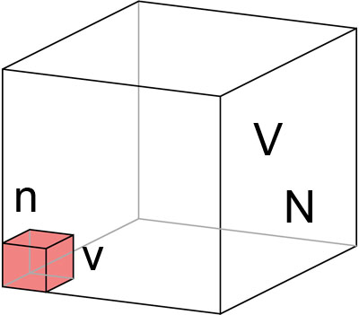

まず，ある箱を用意します．
その体積を，Ｖ，とします．
その中には分子が，Ｎ個，入っています．
体積，Ｖの箱の中に，小さいスペース，ｖ，を考えましょう．
その中には，分子が，ｎ個，入っています．

完全に分子の分布がランダムだとすると，ｖの大きさのＶに対する比は，
\(\Large P = \frac{v}{V} \)
となります．0<P<1ですね．
スペース，ｖ，に含まれている分子の数の平均は，
\(\Large <n> = N \cdot P \)
となります．
これは，
平均ｎ個がスペースｖにＰの確率で存在し，
それ以外の分子が，ｖ以外の部分に存在する
ということになります．
ｎ個と（Ｎ－ｎ）個を二つのスペースに分割する場合の数は，分子はおのおの区別できませんので，その場合の値は，二項分布となり，
\(\Large W_n = _N C_n \cdot P^n \cdot (1-P)^{N-n} \)
となります．変形すると，
\(\Large \begin{eqnarray} W_n &=& _N C_n \cdot P^n \cdot (1-P)^{N-n} \\
&=& \frac{N \cdot (N-1) \cdot (N-2) \cdots (N-n+1)}{n!} \left( \frac{<n>}{N} \right)^n \cdot \left( 1- \frac{<n>}{N} \right ) ^{N-n} \\
\end{eqnarray} \)
さらに変形すると，
\(\Large W_n = \frac{1}{n!} \frac{N \cdot (N-1) \cdot (N-2) \cdots (N-n+1)}{N^n} \cdot <n>^n \cdot \left( 1 - \frac{<n>}{N} \right)^N \cdot \left( 1- \frac{<n>}{N} \right ) ^{-n} \)
となり，
\(\Large W_n = \frac{1}{n!} \cdot 1 \cdot \left( 1-\frac{1}{N} \right) \cdot \left( 1-\frac{2}{N} \right) \cdot \left( 1-\frac{n-1}{N} \right) \cdot <n>^n \cdot \left( 1 - \frac{<n>}{N} \right)^N \cdot \left( 1- \frac{<n>}{N} \right ) ^{-n} \)
ここで，Ｎを非常に大きい数としますと，
\(\Large W_n = \frac{1}{n!} \cdot \color {blue}{1 \cdot \left( 1-\frac{1}{N} \right) \cdot \left( 1-\frac{2}{N} \right) \cdot \left( 1-\frac{n-1}{N} \right)} \cdot <n>^n \cdot \left( 1 - \frac{<n>}{N} \right)^N \cdot \color {blue}{\left( 1- \frac{<n>}{N} \right ) ^{-n}} \)
青色の部分が，１，となってしまいます．
特に注意してほしいのは，
\(\Large \color {blue}{\displaystyle \lim_{ n \to \infty } \left( 1- \frac{<n>}{N} \right ) ^{-n} = 1} \)
となりますが，
\(\Large \color {back}{\displaystyle \lim_{ n \to \infty } \left( 1- \frac{<n>}{N} \right ) ^{N}} \neq 1\)
となることです．
さらに，公式，
\(\Large \displaystyle \lim_{ n \to \infty } \left( 1- \frac{x}{N} \right ) ^{N} = e^{-x}\)
を使って，まとめると，
\(\Large \begin{eqnarray} W_n &=& \frac{1}{n!} \cdot <n>^n \cdot e^{-<n>} \\
&=&
\frac{<n>^m}{n!} \cdot e^{-<n>} \\
\end{eqnarray} \)
となります．
これが，ポアッソン分布です．
では具体的な数値を入れてみましょう．